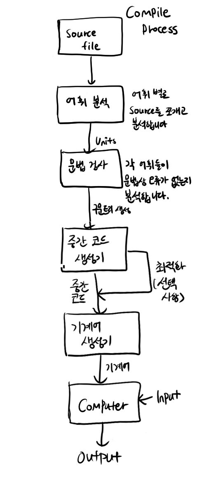
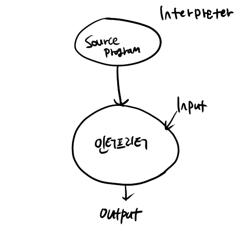
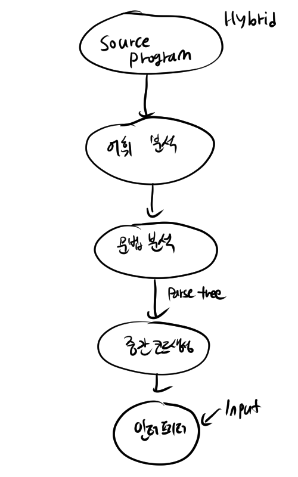

이 글은 ROBERT W.SEBESTA의 concepts of programming languages (11th, global edition) 에 의거하여 작성된 글이며, 필자가 번역 및 공부하면서 정리하는 글이라 오류가 있을 수 있습니다. 오류,오타 지적은 환영입니다.
코드 실행 방법에 따른 분류
High-Level Language을 기계어로 변환해주는 방법은 일반적으로 3가지가 있습니다.
- 컴파일러를 이용한다.
- 인터프리터를 이용한다.
- 하이브리드를 이용한다.
컴파일러
컴퓨터가 프로그램을 실행할 때 바로 실행할 수 있도록 미리 기계어로 번역해 놓는 방법입니다.

소스코드를 컴파일하면
-
소스코드를 어휘별로 분류합니다.(Lexical analyzer)
-
그 어휘들이 문법적으로 옳은지 분석하고 parse tree로 만듦니다.(syntax analyzer)
-
중간 코드 생성기를 통해 중간 코드로 컴파일 합니다. (자바의 bytecode 같은걸 만드는 겁니다.)
-
중간 코드를 기계어(목적코드)로 컴파일합니다.
-
컴퓨터가 기계어를 실행합니다.
의 단계를 거치게 됩니다.
여기서 중간 코드를 왜 만들지? 그냥 바로 기계어로 번역하면 더 빠르고 좋은거 아닌가? 라고 생각할 수 있는데, 중간 코드를 만드는 이유는 만들어야하는 컴파일러의 수를 줄이기 위함입니다. 4개의 언어(c,c++,go,pascal)가 있다고 가정합시다. 그리고 실행환경은 3가지(window, 리눅스, ios) 있다고 하죠. 중간 코드를 만드는 과정이 없다고 한다면, 우리는 컴파일러를 총 4*3개 만들어야합니다. (c 윈도우용 컴파일러, c 리눅스용 컴파일러, c ios용 컴파일러, c++ 윈도우용 컴파일러 …)
하지만 중간 코드 생성기를 두고 1차적으로 중간 코드로 컴파일 한 뒤에 중간 코드를 기계어로 컴파일 하게되면 컴파일러를 4+3개만 만들어도 됩니다.(c to 중간코드, c++ to 중간코드, go to 중간코드, pascal to 중간코드 + 중간코드 to 윈도우, 중간코드 to 리눅스, 중간코드 to ios)
인터프리터
컴파일러가 코드를 통째로 목적코드로 변환한다면, 인터프리터는 소스코드를 한 줄씩 읽고 수행합니다.
장점은 소스레벨에서 디버깅이 가능하며 인터프리터만 있으면 어디서든 실행이 가능합니다.(portability) 즉, 자바의 가상머신처럼 실행환경에 영향을 받지 않습니다.
단점은 컴파일러에 비해 실행속도가 느리다는 것입니다. 또한 메모리 공간도 더 많이 차지합니다. 
하이브리드 코드 실행 시스템
compiler + interpreter 말그대로 반반 섞어놓은 시스템입니다. 초기의 자바가 이런 시스템을 채택했는데, 자바소스코드를 자바바이트코드로 변환한 뒤, JVM에서 코드를 실행하는 방식이었습니다. 장점은 인터프리터보단 빨랐지만 여전히 컴파일러를 쓰는 것에 비해 한참 느렸습니다.
Just in Time(JIT) 실행 시스템은 하이브리드 코드 실행 시스템을 조금 더 보완한 시스템입니다. 먼저 중간 언어로 컴파일 하는 것 까지는 같지만, 함수가 호출될 때 함수를 컴파일 합니다. 현재는 자바가 이 방식을 사용하고 .NET 언어도 이 방식을 사용합니다.

전처리기
프로그램을 실행할 때 프로그램이 컴파일 되기 직전에 실행되는 프로그램입니다.
|
|
흔히 아는 전처리기가 c에서 헤더파일이 전처리기를 이용해 c코드로 변환되죠
메이저 프로그래밍 언어들의 역사
- Fortran: 연산목적
- COBOL: 비지니스 목적
- LISP: AI용 함수형언어
- ALGOL 60,68: C언어, Pascal의 모체
- Smalltalk 80: 객체지향언어의 시작
- pascal: Ada83의 모체
- C++,Java,Python,C#
Fortran
Fortran은 FORmula TRANslating System의 약자로 1957년 IBM 704에서 지원하기위해 만들어졌습니다.
포트란이 개발될 무렵의 상황은 이러했습니다.
- 컴퓨터의 메모리는 매우 작고 느리며 신뢰할 수 없었습니다.
- 초기 컴퓨터의 주 목적은 과학적 계산들을 지원하는 것이었습니다.
- 컴퓨터를 프로그래밍할 효과적이고 효율적인 방법이 없었습니다.
- 초기 컴퓨터는 굉장히 비쌌습니다.
따라서 포트란 컴파일러의 1차 목표는 빠르게 오브젝트 코드를 만들어내는 것이었습니다.
특징
포트란의 특징중 하나는 포트란의 모든 변수의 타입과 공간이 런타임 전에 고정된다는 것입니다. 새로운 변수나 할당된 공간은 런타임중엔 허락되지 않습니다.
LISP
AI의 개념이 1950년대 등장하게 되면서, 언어학자는 자연어의 동작원리에 대해서, 물리학자들은 인간의 뇌를 함수적 프로세스로 모델링 한다는 점에서, 수학자들은 지능을 기계화 한다는 점에서 이 개념에 매료되었습니다. 이러한 관심사는 한가지 결론을 도출하게됩니다:
“컴퓨터가 기호들로 연결된 문장을 처리할 수 있는 방법을 만들어야해!”
MIT의 John McCarthy는 기호연산에 대해 조사하고 컴퓨터가 기호연산을 계산할 수 있는 방법을 연구하게 됩니다. 그 결과 연결된 문장을 처리하는 소프트웨어를 만들게 되고 이를 Advice Taker라고 불렀으며 이는 발전하여 list-processing language(LISP)가 됩니다.
특징
LISP는 AI application을 제작하는데 공헌했으며, 함수형 프로그래밍이라는 영역을 개척했습니다.
ALGOL
알골은 현대언어의 이론적 배경을 제공해준 언어입니다. 수학자들은
- 읽을 수 있으면서 수학 표기법과 최대한 유사한 언어가 필요했고
- 이 언어는 알고리즘을 묘사할 수 있어야 했으며
- 최종적으로는 기계적인 방법으로 기계어로 번역할 수 있길 원했습니다.
그렇게 ALGOL 58이 만들어집니다. 이 알골58에 대해 격렬한 논쟁이 유럽과 미국에서 있었고 다양한 요구사항들이 생겨납니다. 1960년 수학자들은 다시 뭉치게 되었고 결국 ALGOL 60이 탄생하게 됩니다. ALGOL 60은 드라마틱하게 바뀌었습니다. block structure를 지원해 스코프의 개념이 생겨났고, 서브프로그램에 값을 전달하는 것과 이름을 전달하는 것, 두 가지의 파라미터 제공방법이 생겼습니다. 또 재귀문이 사용 가능해졌고 static-dynamic array도 지원하게 됩니다.
특징
비록 알골 60은 인기있는 언어는 아니었지만, 거의 20년 이상 컴퓨터 문헌에서 알고리즘을 표현하고 전달하는데 사용하는 유일한 공식 언어가 되었습니다.
COBOL
코볼은 COmmon Business-Oriented Language의 약자입니다. 이름에서 알 수 있듯, 철저하게 사무용 언어입니다. 수정이 쉽고 영어와 비슷한 문법을 가졌으며, 대용량의 data를 처리하고 사용자지정형식을 주고 받는데 용이했습니다. COBOL은 상당히 인기있는 언어였고, 비지니스 컴퓨팅의 발전에 영향을 주었지만, 다른 언어에 큰 영향을 주진 못했습니다.
특징
새로운 개념이 많이 등장하는데 DEFINE을 이용한 매크로가 그중 하나입니다. 또한 코볼은 변수의 이름을 최대 30자까지 지원하고, 단어 연결 문자를 사용할 수 있어, 이름이 가진 의미를 전부 표현할 수 있는 최초의 언어가 되었습니다.
PL/I
I처럼 보이지만 로마숫자1입니다. 포트란과 코볼을 섞어 만든 언어입니다.
Basic
베이직도 코볼처럼 널리쓰였으나 컴퓨터학자들의 환대를 받지 못한 언어입니다. 비전공자도 배우기 쉽고 아주 적은 메모리만 사용했습니다. 1990년 마이크로소프트가 Visual Basic이란 이름으로 언어를 확장하면서 재조명 받게 되었습니다.
특징
베이직은 포트란을 기초로 만들어졌으나 알골60의 일부 문법도 따왔습니다. 베이직의 가장 큰 특징은 터미널을 통한 원격 코딩이 가능했다는 점입니다. 덕분에 일반인들도 이 언어를 사용해 보는 것이 가능했고, 널리 사용될 수 있었습니다. 그 뒤로 점차 인기가 시들시들해지며 비주류 언어가 되던 베이직은 마이크로소프트로인해 1990년 Visual Basic으로 재탄생하게 됩니다.
Pascal & C
두 언어는 ALGOL60, ALGOL68을 기반으로 만들어진 언어입니다. 이중 Pascal은 ALGOL과 아주 유사하게 확장되었고 주로 교육용으로 사용되었습니다. C는 Unix 설계를 위해 만들어진 언어입니다. OS 디자인을 위해 만들어졌지만, C는 다른 다양한 분야에도 적합했습니다. 또한 Unix, Linux의 성공으로 인해 C는 역사적으로 가장 성공한 언어가 되었습니다.
Prolog
최초의 논리언어 입니다.
Ada
미국의 국방부(DoD)에서 사용하기 위해 만들어진 언어입니다. DoD는 임베디드 시스템이 절대적으로 많았고 기존의 다른 언어들은 임베디드에 잘 맞지 않아 새로운 표준언어가 필요했습니다. 뭐…실제로 군용 임베디드가 Ada로만 작성하게 되진 않았습니다.
특징
pascal에서 확장되어 나왔습니다. 군용목적 프로그램을 개발할 때 많이 쓰입니다. 쓰레드, 예외처리에 대한 개념들이 등장했습니다.
SmallTalk
최초의 객체지향 언어입니다.
C++
C를 기반으로 객체지향의 개념을 탑재한 언어입니다.
JAVA
C++을 임베디드에 실을 수 있게 개조한 언어입니다. C++보다 작고, 간단하고, 안전한 언어로 만드는 것이 목적이었습니다. 초기에 인터프리터로 작동하도록 만들었지만, C에 비해 너무 느려(10배 이상) Just in Time 방식을 사용하게 되었습니다. 임베디드용으로 만들어졌지만 실제론 웹상에서 많이 사용되었습니다. 현재는 안드로이드, 웹서버 등에서 쓰이죠
Script Language
인터프리터 방식으로 실행되면서 간단한 처리, 실행을 일으키는 언어입니다. 초기의 보여주기의 목적인 웹이 상호작용,양방향 통신등의 기능을 필요로하게 되면서 발달하게 되었습니다. PHP, Perl, JavaScript, Ruby, Python 등등이 있습니다.
C#
C#은 C++,JAVA 기반에 Delphi,Visual Basic의 일부 개념을 탑재한 언어입니다. 마이크로소프트에서 만든 .NET의 플레그쉽 언어 입니다.
Markup-Programming Hybrid Languages
마크업과 프로그래밍을 둘 다 할 수 있는 언어입니다. 대표적으로 JSP가 있습니다.